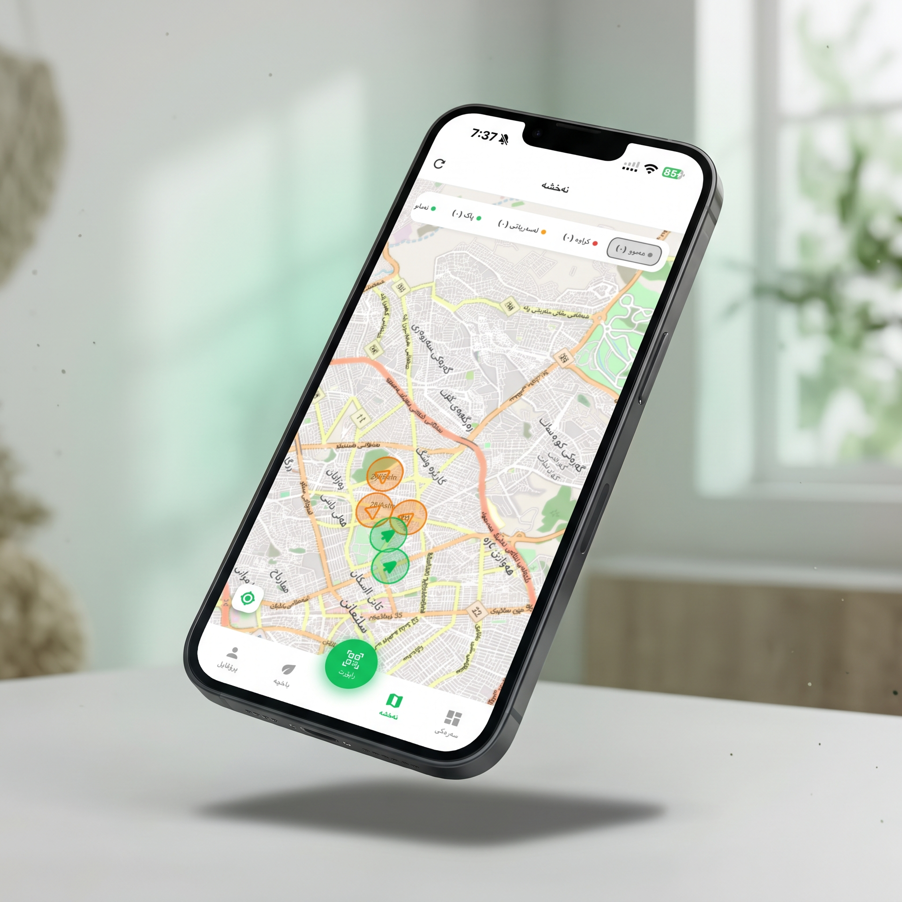
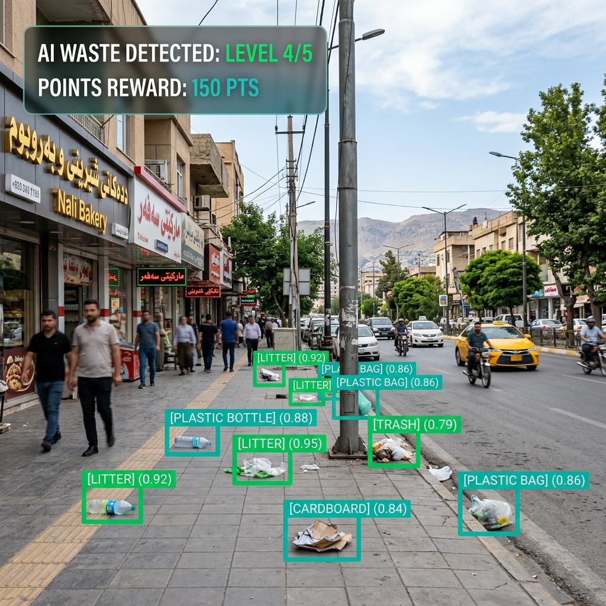

GreenLegacy Slemani connects citizens with the municipality in a complete smart eco-cycle: Find & report polluted areas, let AI analyze waste, volunteer to clean, get multi-verified, earn rewards, and compete in the Eco-League.

These data are examples of what the app can do.
An intelligent, gamified platform turning city cleanup into a transparent community mission.
Citizens discover polluted areas in Sulaymaniyah, take a photo through the app, and select their neighbourhood location.
The system automatically scans the photo, detects waste items, estimates quantity, and assigns a pollution score from Level 1 to 5.
Citizens volunteer to clean a reported spot. The app gives randomized verification instructions to follow during recording.
Robust checks verify location, camera frames, QR information, before/after image comparison, and AI waste reduction.
Verified cleanups earn points instantly. Anti-fraud rules keep points pending until fully validated.
Neighbourhoods in Sulaymaniyah compete on leaderboard rankings based on resident contributions!
Our custom YOLOv8 model evaluates waste severity in real-time while strict verification prevents duplicate, fake, or abusive reports.

Clean Reward: 150 Eco-Points
Interactive Sample Preview (Select location to simulate AI scanning):
Every cleanup attempt is stored with AI image comparison, timestamped geolocation, and photo proof for complete transparency.
Transforming city cleanliness into friendly rivalry among Sulaymaniyah's districts.
Connecting Citizens, Businesses, Recycling Companies, and Municipality Staff in a unified waste management platform.
| Report ID | Location | District | YOLOv8 Severity | Status | Earned Points |
|---|---|---|---|---|---|
| CLN-501 | Sarchinar Park Spot | Sarchinar | Level 4 (Severe) | Approved | +150 Pts |
| CLN-502 | Saholaka Corner | Saholaka | Level 3 (Moderate) | Pending (24h Review) | 100 Pts (Pending) |
| Request ID | Bin QR | Material | AI Items | Status | Assigned Recycler | Verified Weight | Earned Points | Requested At |
|---|
Please select an accepted request from the list or map to verify and complete collection.
| Request ID | Bin QR | Business Name | District | Material | Verified Weight | Points Issued | Completed Timestamp |
|---|
| District Name | Registered Bins | Completed Collections | Verified Weight (kg) | Total Points Distributed | Environmental Status |
|---|
| Audit ID | Source Type | Entity / User | Submitted Weight | Flag Reason | Timestamp | Action |
|---|
| Txn ID | Account Name | Role | Source Type | Reference ID | Weight (kg) | Points Awarded | Status | Timestamp |
|---|
Empowering city officials with real-time maps, pollution age indicators, evidence reviews, and environmental statistics.
Monitor reported spots by severity (Level 1-5) and age across all city sectors.
Compare before-and-after photo frames and review suspicious cleanup submissions.
Track total reported locations, verified cleanups, and tons of waste removed.